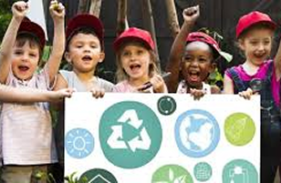
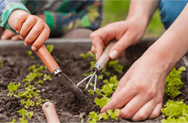
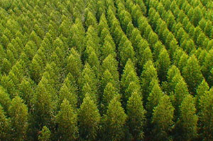

Plantio de mudas
Cada muda plantada ajuda a restaurar o meio ambiente

Educação Ambiental
Promove oficinas e rodas de conversas

Cuidados
Ajude a manter areas preservadas

Mapeamento
Indentifique areas que precisam de mapeamento
Cadastre-se como voluntário
Faça parte de ações que transformam o mundo. Com pequenas atitudes, você pode gerar grandes impactos na natureza e na comunidade